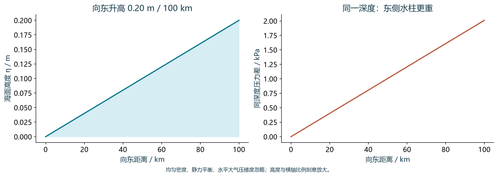
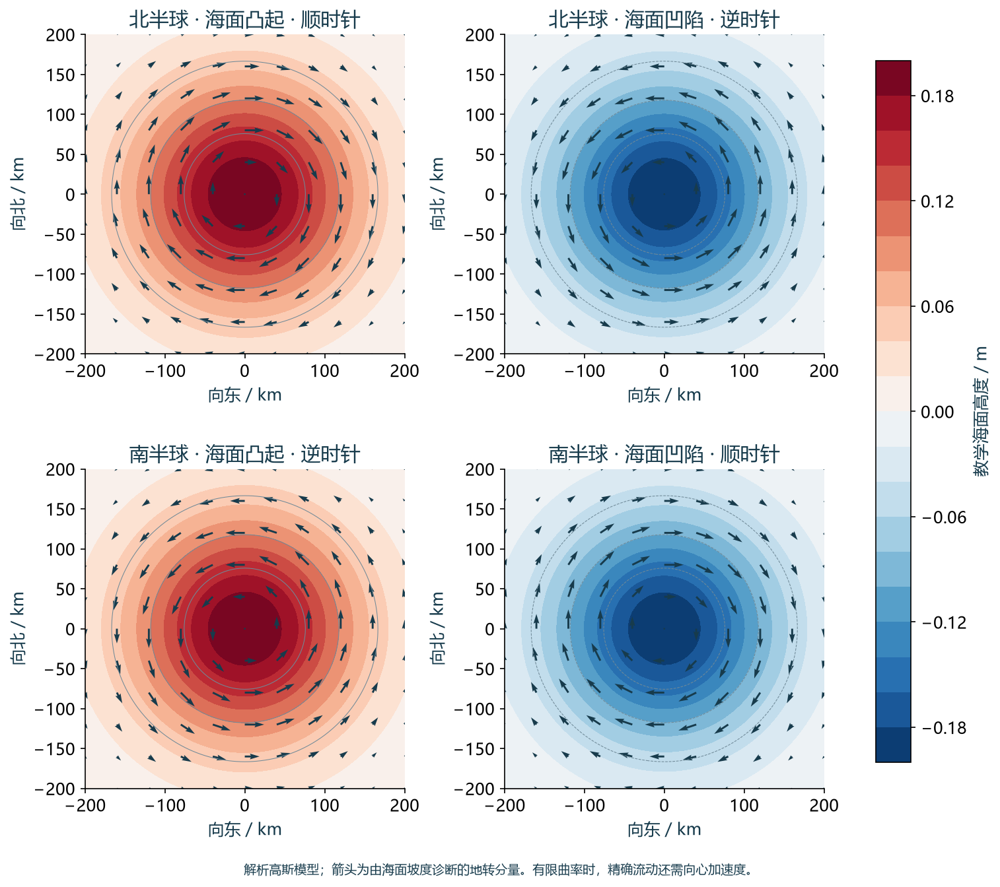
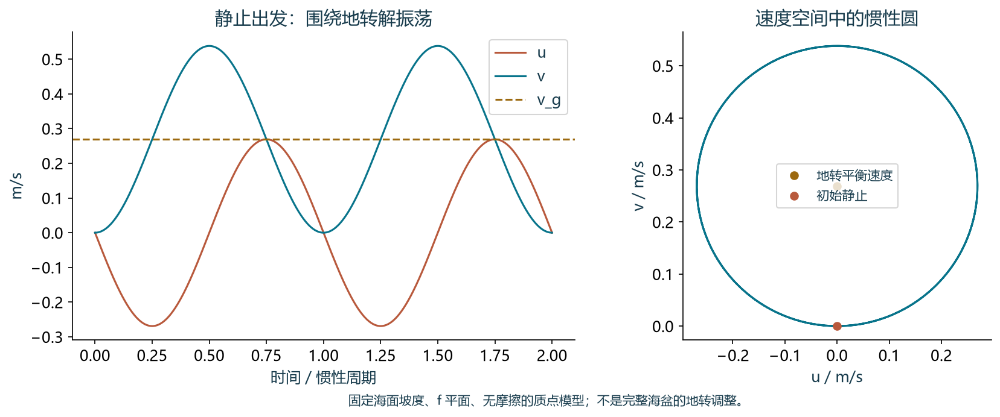

01 · 为什么海水会动？先看压力
想象在同一深度放置两个很小的水块。如果东侧水块承受的压力更大，接触面上的压力作用就会把水推向西侧。压力梯度描述压力随位置增加的方向，而压力梯度力指向压力减小的方向。两者不要画成同一支箭头。单位质量所受的水平压力梯度力是 \(-\nabla _{h}p/\rho _{0}\)。
海面高度差和海水密度差都能形成水平压力差。这里的比较必须在同一个几何高度进行，不能把一个站点的海面与另一个站点的深层压力直接比较。地转流不是海水完全没有受力，而是两项主要水平作用在近似意义上互相抵消。
依据：[momentum]
02 · 在随地球旋转的坐标中观察
我们把地球表面当作参照系，因此需要在运动方程中计入科里奥利项。采用海洋大尺度运动常用的传统近似，其水平加速度为 \(-f k\times u_{h}\)，其中 k 向上。在北半球，运动中的水块受这项作用向自身运动方向的右侧偏转；在南半球则向左。静止水块没有这项水平加速度。
这项加速度始终垂直于水平速度，所以单独作用时改变方向而不直接改变速率。写方程时，若把科里奥利项移到等号左边，它变为 \(+f k\times u_{h}\)；这不意味着物理作用方向反了。有效重力已包含离心作用，本章不再额外重复添加离心力。
依据：[rotation]
03 · 坐标、符号和单位先统一
局地坐标取 x 向东、y 向北、z 向上。u、v、w 分别是三个方向的速度，正值代表东、北、上；纬度 \(\varphi \) 在北半球为正。f 在北半球为正，南半球为负，赤道为零。\(\Omega =7.292115\times 10^{-5} s^{-1}\) 是地球自转角速度，g 取 \(9.81 m s^{-2}\)。
p 表示压力，\(\rho _{0}\) 是 Boussinesq 近似中的常数参考密度，\(\eta \) 表示相对于水平基准面的海面高度。\(p_{x}\) 和 \(\eta _{x}\) 是沿米制距离的偏导数。高度以米输入，距离也以米输入，f 以每秒为单位，所得流速才是 \(m s^{-1}\)。高度本身不会决定流速，决定流速的是高度的水平变化率。
依据：[rotation]
04 · 地转平衡来自完整动量方程
水平动量方程保留水块的加速度、科里奥利项、压力梯度和摩擦作用。物质导数 \(\frac{D}{Dt}=\frac{\partial}{\partial t}+u\frac{\partial}{\partial x}+v\frac{\partial}{\partial y}+w\frac{\partial}{\partial z}\) 包含局地随时间变化和水块穿过空间不均匀流场时产生的平流加速度。\(F_{x}\)、\(F_{y}\) 代表单位质量的摩擦或其他未单列作用，单位都是 \(m s^{-2}\)。
当地转近似成立时，局地加速度、平流加速度和摩擦相对主要项都较小，余下的是科里奥利与压力梯度之间的平衡。仅说“海流稳定，所以是地转流”并不充分：稳态弯曲流仍有向心加速度，边界层稳态流仍可能受强摩擦。近似是否合理必须结合空间尺度、时间尺度和所处位置判断。
05 · 两个分量的符号逐步推导
先从东向方程去掉较小项：\(-fv=-p_{x}/\rho _{0}\)，因此 \(v=p_{x}/(\rho _{0}f)\)。再从北向方程得到 \(fu=-p_{y}/\rho _{0}\)，因此 \(u=-p_{y}/(\rho _{0}f)\)。这两步可以独立检查正负号。例如北半球压力向东增加，压力梯度力向西；向北的海流产生向东的科里奥利加速度，两者恰好相反。
向量形式为 \(u_g=k\times \nabla _{h}p/(\rho _{0}f)\)，所以地转速度与压力梯度垂直，沿同一深度的等压线流动。顺着海流向前看，北半球高压在右，南半球高压在左。如果压力梯度为零，这个关系给出的地转分量为零；真实海流仍可能存在惯性运动或其他非地转分量。
依据：[geostrophy]
06 · 海面斜坡怎样转化为压力差？
先考虑均匀密度且静力平衡的海洋。竖直压力关系为 \(p_z=-\rho _{0}g\)。由海面边界条件 \(p(z=\eta )=p_{\mathrm{atm}}\) 积分得到 \(p=p_{\mathrm{atm}}+\rho _{0}g(\eta -z)\)。在同一个 z 上，海面较高的一侧水柱更厚，水下压力更大。这是从海面高度联系到水平压力的关键步骤。
若大气压力在水平方向近似一致，\(p_{x}=\rho _{0}g\eta _{x}\)、\(p_{y}=\rho _{0}g\eta _{y}\)，代入便得到海面地转流公式。若大气压力存在显著梯度，必须保留它对压力的贡献，或确认高度产品已做相应校正。真实分层海洋的内部流速还受到密度结构影响，不能把均匀海洋的深度一致流速直接套用于每一层。

手机可横向滑图；点击图像查看原尺寸。
依据：[height]
07 · 从等高线读流向和涡旋
等高线的切线给出地转流的走向，坡度与 f 共同决定方向和速率。等高距相同的地图上，等高线越密，局地坡度越大，在同一纬度下地转流越快。海面向东抬升时，北半球流向北；海面向北抬升时，北半球流向西。南半球同一坡度给出的流向相反。
对于理想轴对称海面隆起，北半球的地转速度绕中心顺时针，凹陷则逆时针；南半球两者反转。这些箭头表示根据高度梯度诊断的地转分量。沿弯曲路径运动的真实水块仍需向心加速度；当 \(U/(|f|R)\) 不小时，应把曲率项纳入梯度流平衡，不能把弯曲轨迹说成精确的两力相抵。

手机可横向滑图；点击图像查看原尺寸。
改变半球与海面坡度，自己判断流向
平面坡度以每 100 km 的高度差定义。高斯海面凸起的幅度为中心高度，尺度 \(\sigma = 100 \mathrm{km}\)。白圈为读数位置；其中的 \(\mathrm{Ro}\) 用 \(L = 100 \mathrm{km}\) 计算，不代表整幅图的最大值。
海面高度色标：−0.8 至 +0.8 m；线条是等高线。三种箭头各自规范化显示方向，不比较速度与加速度的长度。
轨迹只沿固定的诊断速度场运动，不模拟从静止建立地转平衡。示意时间加速：1 秒 = 24 小时；边缘粒子在平面模式中循环显示。
08 · 一次带单位的完整计算
设纬度为 30°N，海面在向东 100 km 的距离内升高 0.20 m，并且没有南北坡度。先换算 \(L=100000 m\)，得到 \(\eta _{x}\approx \Delta \eta /L=2.0\times 10^{-6}\)，\(\eta _{y}=0\)。再计算 \(f=2\Omega \sin 30^{\circ}=7.292115\times 10^{-5} s^{-1}\)，最终 \(u_g=0\)、\(v_g\approx 0.2691 m s^{-1}\)，即约 \(26.9 \mathrm{cm} s^{-1}\)，流向北。
把地点改为 30°S，保持坡度和其他参数不变，f 变负，\(v_g\) 变为 \(-0.2691 m s^{-1}\)，即向南。把整幅海面抬高一个固定值而不改变坡度，流速则不变。这个例子是人为指定的均匀坡度教学算例，不是观测；用差值估算导数时，结果代表这段距离上的平均坡度。
算完，再核对方向与单位
\(0.20 m / 100,000 m = 2\times 10^{-6}\)，是无量纲坡度。30°N：\(f = 7.292115\times 10^{-5} s^{-1}\)。
海面向东升高：\(\eta _{x} > 0\)，\(\eta _{y} = 0 \to u = 0\)，\(v = +0.2691 m/s\)，向北。到 30°S，f 变负，速度向南；高度差与距离相同。
以 \(U = 0.2691 m/s\)、\(L = 100 \mathrm{km}\) 估算 \(\mathrm{Ro} \approx 0.037\)。它提示平流加速度可能较小，但没有检验摩擦或随时间变化。
依据：[geostrophy]
09 · 为什么“开始偏转”不等于“自动达到平衡”？
如果水最初静止但存在压力梯度，最初的科里奥利加速度为零，水会先沿压力梯度力方向加速。速度建立后才出现偏转。然而，在固定、均匀压力梯度、无摩擦的单水块模型中，速度不会自动停在地转解上；它围绕地转速度作惯性振荡，周期为 \(2\pi /|f|\)。
真实海洋的地转调整允许海面、压力和流场共同演变，惯性重力波可把能量传离某一区域，混合和摩擦也可耗散能量。局地流场因此可能接近平衡，同时仍保留振荡。教学流程应读作“压力不平衡 → 加速与偏转 → 波动及调整 → 可能形成近地转背景”，而不是无条件的单向收敛。

手机可横向滑图；点击图像查看原尺寸。
依据：[adjustment]
10 · 密度差决定地转流的垂直切变
分层海洋中，将地转公式对 z 求导，再使用静力关系 \(p_z=-\rho g\)。Boussinesq 近似只在惯性和水平压力项分母中使用 \(\rho _{0}\)，密度变化仍保留在静力关系中。于是 \(u_z=-p_{yz}/(\rho _{0}f)=g\rho _y/(\rho _{0}f)\)，而 \(v_z=p_{xz}/(\rho _{0}f)=-g\rho _x/(\rho _{0}f)\)。这里 z 向上，若改用向下的深度坐标，导数符号要相应改变。
这就是热成风关系。名称中的“风”不意味着海洋里另有一种风，它描述地转速度随高度的变化。在北半球若同一高度上密度向北增大，东向速度便随 z 增大。关系给出切变而非绝对流速；把切变积分后，还需要某一参考层的速度，不能直接假定深层海水不动。

手机可横向滑图；点击图像查看原尺寸。
依据：[thermal]
11 · 船测和浮标怎样推算内部地转流？
CTD 和剖面浮标测得温度、盐度和压力。温盐共同决定海水密度，实际处理应使用一致的海水状态方程，并明确温度、盐度与压力变量的定义。相邻站点的密度剖面可以用于计算相对于参考压力的动力高度差，进而求得相对于参考层的地转速度；不能只看海水冷暖就判断内部流向。
一条测线上的站对主要约束穿过测线的速度分量，站距和采样时间差也会影响估计。若参考层存在流动，采用“无运动参考层”得到的流速会整体偏移。结合 ADCP、系泊、漂流浮标、卫星海面信息或约束反演，可以补充参考速度；应同时报告参考层假设和不确定性。
12 · 卫星高度不是直接测到的全部海流
卫星测高提供海面高度信息，经过轨道、传播路径、潮汐等处理，并选择适当的参考面后，可以得到动力地形。常见产品中，\(\mathrm{SLA}\) 是海面高度异常，\(\mathrm{MDT}\) 是平均动力地形，\(\mathrm{ADT}\) 是绝对动力地形，满足 \(\mathrm{ADT}=\mathrm{SLA}+\mathrm{MDT}\)。相加之前，基准、参考时期和产品版本必须兼容。
对 \(\mathrm{ADT}\) 的水平梯度应用地转关系，可估计海面绝对地转流；只对 \(\mathrm{SLA}\) 求梯度，得到的是相对于平均背景的地转流异常。不要把异常速度标成总流速，也不要把卫星诊断的地转分量理解为完整表层水流。比较观测或制作图例时，应写清楚“绝对地转速度”或“地转速度异常”。
依据：[altimetry] [mdt]
13 · 从高度网格到流速的可靠工作流
先确认变量和单位 → 选择 \(\mathrm{ADT}\) 或 \(\mathrm{SLA}\)→ 检查坐标与掩膜 → 按实际距离求梯度 → 逐点计算 f → 得到 u、v → 检查方向、数量级与适用条件。经纬度以度存储时，不能直接把“米每度”当作无量纲坡度。以弧度表示经度 \(\lambda \)、纬度 \(\varphi \)，球面局地距离为 \(dx\approx a \cos \varphi d\lambda \)、\(dy\approx a d\varphi \)。
差分会放大短波噪声，尤其当高度差很小或网格很密时。网格间距并不等于产品能分辨的有效尺度；必要的平滑和差分方法应随产品质量和目标尺度选择，并记录下来。不要跨越陆地掩膜求梯度，要检查海岸、缺测、边缘、经度接缝与近赤道区域。显示箭头前也应检查是否把厘米高度误当成米。
依据：[altimetry]
14 · 地转近似在哪些条件下可靠？
用 \(\mathrm{Ro}=U/(|f|L)\) 衡量平流加速度相对科里奥利项的大小，用 \(1/(|f|\tau )\) 衡量局地随时间变化。两者较小且摩擦较弱时，地转诊断更有依据。对弯曲流还应检查 \(U/(|f|R)\)，其中 R 为曲率半径。大尺度、缓变、远离强摩擦边界通常更有利，但这些描述应由量级估计支持。
近赤道 f 变小，直接使用 \(1/f\) 会使计算病态，赤道处更不能代入。适用边界由流速、尺度、时间变化和产品算法共同决定，不存在对所有海洋过程统一有效的“5°禁区”。赤道动力学需要专门理论或经过说明的产品处理。强潮流、风暴、快速变化锋面和小尺度流也不能只凭海面斜坡给出全部速度。
15 · 把地转分量放回真实海洋
真实速度可以概念性地分为地转分量与非地转余量。后者包含风驱动 Ekman 流、潮汐、惯性振荡、边界摩擦以及调整过程等贡献。这不是说风与地转流无关：风可长期改变海面和密度结构，从而建立压力梯度；风应力也可以直接维持具有摩擦作用的表层 Ekman 流。
地转关系也不能单独推断上升流。在常密度、常 f 的平面上，交叉偏导相消，水平地转散度为零；当 f 随纬度变化，水平散度一般不再为零。垂直速度需要连续方程及非地转或边界过程共同约束。学会这条诊断链之后，应始终问：我算的是哪一部分流、参考是什么、被忽略的项是否真的较小？
检查你是否能自己判断
在 30°N，海面向东升高，且没有南北坡度。地转流指向哪里？
\(\eta _{x}>0\) 且 \(f>0\)，所以 \(v_g=g\eta _{x}/f>0\)，而 \(u_g=0\)。向北流动时，高海面在右侧（东侧）。
对 \(\mathrm{SLA}\) 网格求地转速度，最准确的图例是哪一个？
\(\mathrm{SLA}\) 不包含 \(\mathrm{MDT}\) 的平均背景梯度，因此给出地转异常；\(\mathrm{ADT}\) 梯度用于估计绝对地转流。
北半球采用 z 向上坐标，若密度向北增加，热成风关系给出什么？
\(u_z=g\rho _y/(\rho _{0}f)>0\)。这约束速度的垂直变化，并不确定任一层的绝对速度，也不能直接决定垂直运动。
常见误解，逐个澄清
海面高处的水为什么不一直向低处流？
压力梯度力确实指向低压，但运动中的水也受科里奥利作用。近地转状态下，两项主要水平加速度抵消，速度沿等高线。建立这种状态需要调整过程，并非一开始就平衡。
平静、稳定的海流一定是地转流吗？
不是。稳态只意味着局地时间导数为零。弯曲流仍有平流加速度，潮汐周期平均或边界层流也可能有重要摩擦。需要检查完整水平动量方程的量级。
只用 \(\mathrm{SLA}\) 能得到绝对地转流吗？
通常不能。\(\mathrm{SLA}\) 的梯度给出相对于平均背景的速度异常。绝对地转流需要 \(\mathrm{ADT}\)，或将 \(\mathrm{SLA}\) 与基准兼容的 \(\mathrm{MDT}\) 相加后求梯度。
为什么南半球的箭头会反转？
同一高度梯度对应同一压力梯度力，但 \(f=2\Omega \sin \varphi \) 在南半球为负。地转速度分量都含 \(1/f\)，因此同一坡度的流向反转。
能把赤道处的 f 换成一个很小的数吗？
不能据此得到有物理依据的流速。结果会依赖人为选定的小数，并放大高度误差。应采用赤道动力学方法或有明确说明的赤道产品算法。
热成风能告诉我某一深度的流速吗？
它直接给的是地转速度的垂直切变。积分得到两层之间的速度差后，还需要一层的参考速度。参考层无运动是额外假设，并非热成风关系的结论。
图中的涡旋箭头是水块精确轨迹吗？
它们是解析高度场诊断出的地转速度方向。真实弯曲运动需有向心加速度，若曲率 Rossby 数不小，就应考虑梯度流或更完整动力学。
图件、计算与参考资料
图件是本章独立绘制的解析教学模型，数值和受力符号均可复算。下载包提供中英文 PNG、对应 PDF、完整 Python 绘图脚本和模型参数说明。
python -m pip install numpy matplotlib python geostrophic_figures.py --out figures
以下依据用于核对动力学与观测定义；教学图不是从这些网站摘取的真实海流。
- MIT OCW 12.800 — momentum equations and Boussinesq approximation
- MIT OCW 12.800 — rotating coordinates, Lectures 14–15
- MIT OCW 12.800 — geostrophy and scaling, Lecture 16
- MIT OCW 12.800 — height-gradient form and gradient flow, Lecture 17
- James F. Price / MIT OCW — A Coriolis Tutorial, Part 2, §5.2
- James F. Price / MIT OCW — A Coriolis Tutorial, Part 2
- MIT OCW 12.307 — Thermal wind, Marshall, Plumb and Illari
- AVISO+ — CNES–CLS mean dynamic topography and hydrographic inputs
- AVISO+ — Global sea-surface-height products
- AVISO+ — \(\mathrm{ADT} = \mathrm{SLA} + \mathrm{MDT}\) and reference periods
- AVISO+ — Special treatment of equatorial geostrophic velocities
- MIT OCW 12.800 — Ekman balance and boundary layers, Lectures 18–20
- Copernicus Marine — Geostrophic and Ekman current components